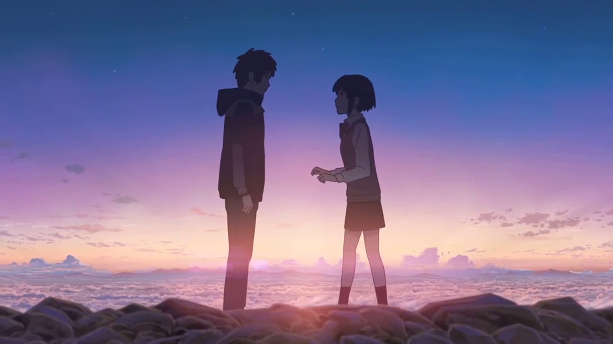

- Funny
- Horror
- Home
LDR “LONG DISTANCE RELATIONSHIP”
Hi po ako po pala si Jackie I’m 20 years old, Ito po story ko ang hirap po pala ang LDR oh ang malayo ka sa taong mahal mo ,dahil d mo alam ano ang gagawin dahil minunuto mo syang namimiss ,di mo alam ano ginagawa nya kong saan sya kumakain na ba sya ,di mo lang sya maaalaga At mayakap kong my sakit sya ,basta ang hirap sa situation na malayo kayo sa isa’t isa kaya nga may kantang magka bilang mundo dahil Ganon na Ganon kami hirap pag sa VIDEO CALL mo lang sya makaka usap ang hirap kasi I ipakita sa taong mahal mo na malungkot ka dahil mas lalo syang malungkot Kailangan pala dto sa LDR ang maging matatag matapang maintindihin mapag tiis at higit sa lahat my tiwala kayo sa isa’t isa .piro minsan d mo rin naman maiiwasan na mag tampohantampo dahil minsan parang fell mo nauubosan na sya ng oras sayo minsan na iisip mo ano kaya ginagawa nya busy kaya sya yon bang para kang isang babaeng paranoid. Na d mo na alam gagawin mo dahil wala ka sa tabi nya ano ano. nalang masisip .Kailangan talaga pag titiwala kailangan mo syang pag katiwalaan para hindi hahantong sa pag aawayan at tampohan kailangan talaga tapat kayo sa isa’t isa .Kaya mahal na mahal ko sya itago nalang natin sa pangalang Pete noon umalis sya dahil kinakailangan d sya pwedeng mag stay dto sa pinay .Ang ayaw ko pa naman ang magka Layo kami piro wala akong magawa dahil Yon talaga ang gusto ng dois .kong sa baga isang pag subok ang kailangan naming pag daanan .kong Ganon ba kami ka lakas at katatag sa isa’t isa piro thankful ako dahil nalagpasan namin yon lahat piro now panibagong pag subok ulit dahil my isa kaming anak ang nag iisa naming prinsesa dahil ako lang mag isa ang nag aalaga sa anak namin hindi madali ang mag alaga ng baby kailangan mo mag sakripiso talaga d bilang isang asawa kundi isang bilang INA .Masaya naman kami until now I hope na masaya pa namin ang mga susunod pang mga pag subok.